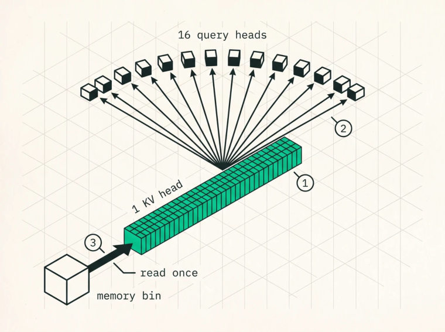

Attention Variants
Attention is the operation at the heart of every transformer and the reason inference is hard. It computes a weighted average of value vectors where the weights come from how well a query matches a set of keys, and in training the expensive part is that every query attends to every key, which is quadratic in sequence length.
Inference has a different problem. During decode, each new token reads the keys and values of every token before it, so the cost isn’t governed by quadratic compute, it’s governed by the size of that cache and the bandwidth needed to stream it. Which means the attention variant a model uses decides the cache size, which decides the bandwidth pressure, which decides how fast you can generate. Everything in this chapter is a different answer to the question of how to make that cache smaller.
Multi-Head Attention
MHA is the original from Vaswani et al. in 2017, where every head has its own query, key, and value projections. Per layer, per sequence, the cache costs
KV bytes = 2 × S × H × d × band for a 64-head model with head dimension 128 at a million tokens in FP16 that’s 2 × 1e6 × 64 × 128 × 2, which is 32 GB for one layer . Across 94 layers, 3 TB, more than an entire 8-GPU node’s memory for a single sequence.
MHA is the most expressive variant and at long context it’s simply unusable, which is why very few new large models use it.
Multi-Query Attention
Shazeer’s 2019 answer was to share a single key and value head across all query heads, dropping the cache to
KV bytes = 2 × S × 1 × d × ban H -fold reduction, 64× for a 64-head model. The cost is quality, since one KV head serving all query heads loses representational capacity, and the original work reported minor quality degradation against the multi-head baseline, with the training-instability results coming later, from the GQA paper. MQA shows up in PaLM, Falcon-40B, and StarCoder, and it sits at the aggressive end of the spectrum while remaining ordinary attention.
Grouped-Query Attention
GQA (Ainslie et al., 2023) splits the difference with H_kv KV heads, each shared by G = H_q / H_kv query heads.
KV bytes = 2 × S × H_kv × d × bReal configurations look like this.
| MODEL | QUERY HEADS | KV HEADS | GROUP G | KV VS MHA |
|---|---|---|---|---|
| Llama-3-8B | 32 | 8 | 4 | 4× smaller |
| Llama-3-70B | 64 | 8 | 8 | 8× smaller |
| Qwen3-235B-A22B | 64 | 4 | 16 | 16× smaller |
| Mistral-7B | 32 | 8 | 4 | 4× smaller |
One caution for anyone quoting those from memory, because this pair gets swapped constantly. Llama-3-70B has 64 query heads, not 32, and the 32Q/8KV configuration belongs to the 8B model.
GQA is the mainstream choice for open models, quality sits close to MHA, and Ainslie et al. showed that GQA uptrained from an MHA checkpoint recovers nearly all of it at close to MQA’s speed.
Here’s the part that gets missed. GQA helps twice, and the second benefit is larger than the first. The obvious win is capacity, 16× less cache. The subtler win is bandwidth efficiency , because as Chapter 1 showed, arithmetic intensity is (2/b)×G, so a group of 16 means every KV element pulled from HBM gets consumed by 16 query heads. A decode kernel that reads the KV cache once per KV head and broadcasts across the group is 16× more efficient than one that naively reads per query head, and kernels that fail to exploit this are a depressingly common source of 8× to 16× slowdowns. They also look completely correct, which is what makes them expensive.

O
1One KV head, read from HBM exactly once. In a 64-query, 4-KV-head model there are four of these instead of sixty-four, which is the capacity win everyone quotes.O
2Sixteen query heads consume that same data inside the kernel without going back to memory. This is the bandwidth win, and it is the larger of the two.O
3Arithmetic intensity is therefore (2/b) x G, group size over KV byte width, which is 16 FLOP/byte in FP16 against a ridge point near 300. A kernel that re-reads per query head throws all of it away and still looks correct.
Multi-Head Latent Attention
MLA, introduced in DeepSeek-V2 in 2024, takes an entirely different route. Rather than sharing KV heads, it compresses them into a low-rank latent.
Keys and values get projected into a shared latent vector of dimension d_c , and the per-head K and V are reconstructed at attention time by an up-projection. RoPE can’t be applied to a compressed representation and then decompressed consistently, so MLA splits the key into a compressible part and a small decoupled RoPE component cached separately.
For DeepSeek-V3, with 128 heads of dimension 128, kv_lora_rank of 512, and qk_rope_head_dim of 64, the cache per token per layer works out at
MLA: 512 + 64 = 576 values
MHA: 2 × 128 × 128 = 32,768 valuesroughly a 57× reduction against MHA, about 70 KB per token for the whole model against 192 to 328 KB per token for typical GQA models of comparable size.
The cost is compute, since the up-projection is a matrix multiply per token. For decode that’s a good trade, because you read 57× fewer bytes and pay for it with FLOPs a memory-bound kernel has spare,
but it changes the roofline position qualitatively and MLA decode kernels can actually become computebound at large batch, which never happens with GQA.
There’s an implementation subtlety here that decides whether MLA pays off at all, usually called absorption . Because the up-projection matrices are fixed, you can algebraically fold them into the query and output projections and compute attention directly in the latent space, never materialising per-head K and V. Implementations that skip this pay the memory saving and the compute cost, getting the worst of both, so every serious MLA kernel absorbs.
MLA is why DeepSeek-V2, V3, R1, and their successors are economical to serve at long context despite being very large.
Sliding window and hybrid layer stacks
A fourth axis is which tokens a layer attends to at all. Sliding-window attention caps each query’s view at the most recent w tokens, which makes the per-layer cache constant in sequence length rather than linear. Mistral-7B popularised it, and Gemma-2 and others interleave sliding-window layers with fullattention layers so the model keeps long-range capability through a minority of layers while most of them hold a bounded cache.
For an inference engine that’s a scheduling and memory-management concern as much as a kernel one. Different layers grow at different rates, so the block allocator needs per-layer policies, and eviction for a windowed layer is trivial, you drop whatever falls out of the window, while eviction for a full layer is anything but.
Linear and hybrid attention
The most significant architectural movement of 2025 and 2026 is the return of linear-complexity sequence mixers, gated linear attention and state-space models and gated DeltaNet, interleaved with a minority of full-attention layers. The inference-relevant property is that a linear layer keeps a fixed-size recurrent state rather than a growing KV cache, so its decode cost per token doesn’t depend on context length at all.
For a serving engine that’s not a drop-in change. A hybrid model needs two kinds of per-sequence state, paged KV blocks for attention layers and fixed-size state tensors for linear layers, each with its own allocator. It needs prefix caching that understands recurrent state, which can’t be shared from an arbitrary midpoint the way a KV prefix can, since you can only reuse state at a point where you saved it. And it needs different prefill kernels, because linear layers prefill with a chunked scan rather than a quadratic attention.
Worth caring about even if you’re not serving one today, because the memory-bandwidth argument that drives every decision in this book applies to these architectures with completely different constants, and an engine built on the assumption that per-sequence state grows linearly with context will need real work to accommodate one that doesn’t.
Choosing an attention variant
| VARIANT | PER-TOKEN KV | QUALITY | USED IN |
|---|---|---|---|
| MHA | 2·H·d | Best | Older models, small models |
| MQA | 2·d | Some degradation | PaLM, Falcon-40B, StarCoder |
| GQA | 2·H_kv·d | Near-MHA | Llama-3, Qwen3, Mistral, Gemma |
| MLA | d_c + d_rope | Comparable, needs absorption | DeepSeek-V2/V3/R1 |
| Sliding window | 2·H_kv·d, capped at w | Task-dependent | Mistral, Gemma-2 (hybrid) |
| Linear / hybrid | Fixed state | Improving rapidly | Hybrid MoE models, 2025– |
As an engine builder you rarely choose the variant, the model chooses for you. What you choose is whether your KV manager, kernels, and scheduler can express all of them, and the engines that struggled hardest with the 2025 model releases were the ones whose KV cache assumed a single uniform layer type.
Key Concept
The attention variant sets the KV cache size, which sets memory bandwidth pressure, which sets decode speed. GQA is the mainstream choice and helps twice, less cache and higher arithmetic intensity, provided your kernel reads each KV head once and broadcasts across its group. MLA compresses KV about 57× into a latent and has to be implemented with absorption to pay off. Sliding-window, hybrid, and linear layers break the assumption that per-sequence state grows linearly with context, and a KV manager that can’t express that assumption will need rewriting.
Exercises
Compute per-token KV bytes in FP16 and FP8 for each row of the table above, for a 94-layer model with d = 128. Which configurations let a 1M-token sequence fit in 288 GB alongside 118 GB of four-bit weights?
Derive why decoupled RoPE is necessary in MLA. What breaks if you apply RoPE to the latent and upproject afterwards?
A GQA decode kernel measures at exactly 1/16 of the bandwidth you expect on a 64Q/4KV model. What’s the most likely bug?
Build: implement decode attention twice, once reading KV per query head and once per KV head with broadcast, and measure both. Confirm the ratio matches the group size.